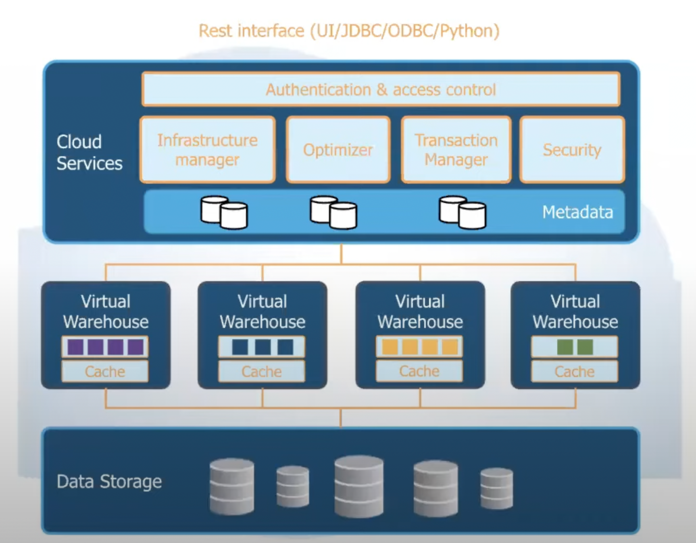
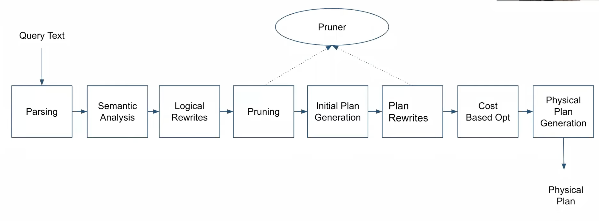
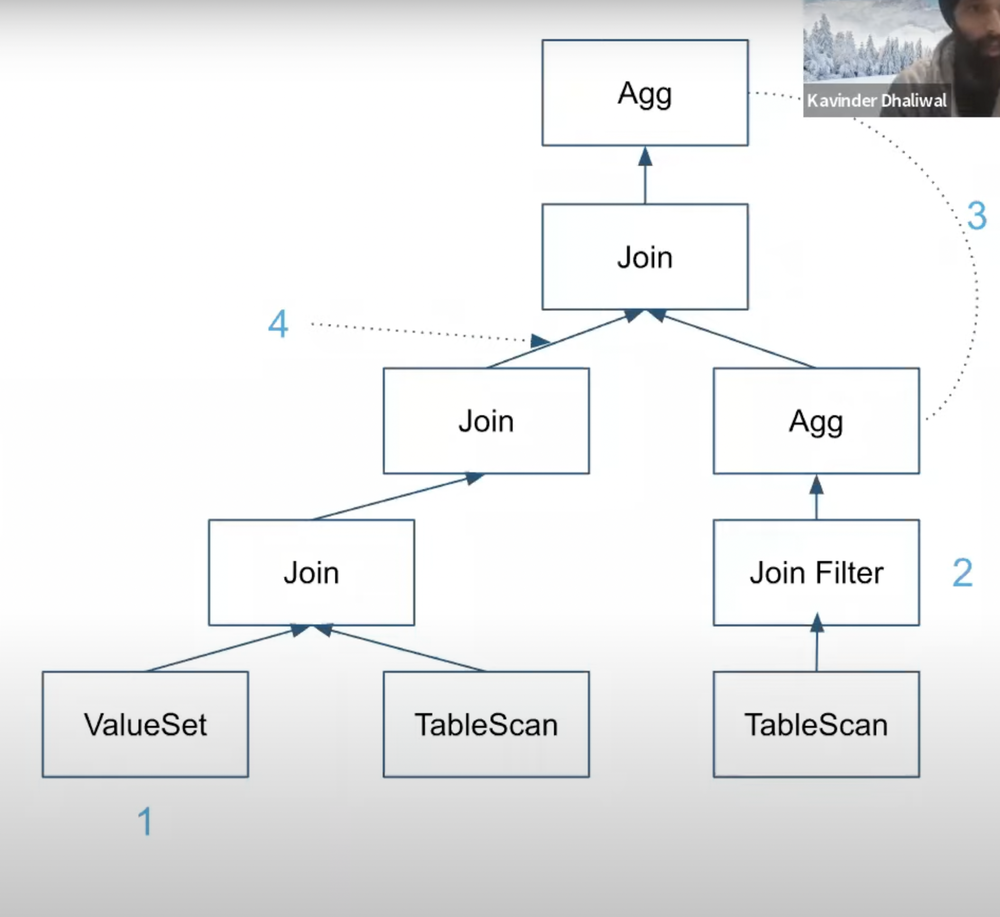
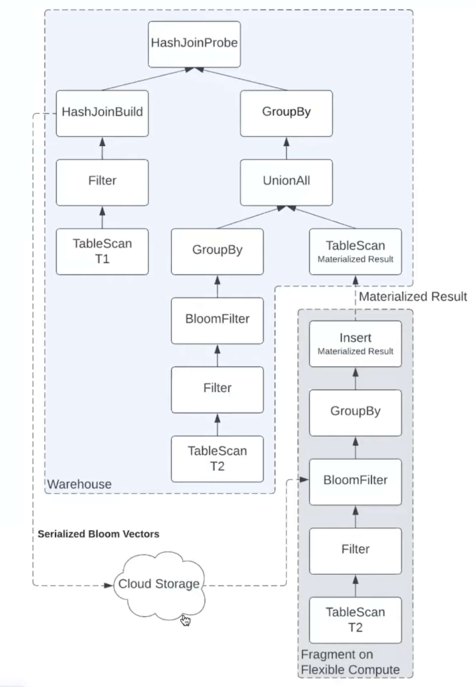
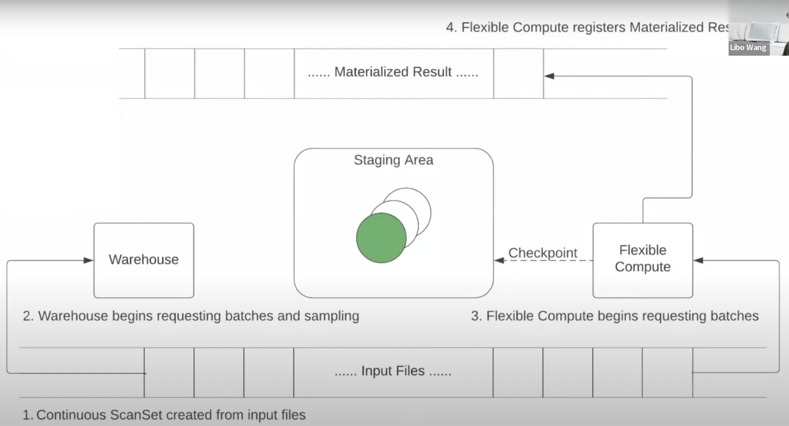

Remarks
Snowflake has a lot of moving parts so it was great to hear from multiple engineers on different things they’ve worked on.
While using aggregations to skip scanning data isn’t new in analytical systems, I liked how aggressively Snowflake filters unnecessary data at every step (data file downloads, join, query optimization) using aggregates on smaller portions of data in a cloud-native context.
- Architecture Parts
- Storage Layer
- Cloud Blob Storage (eg. S3)
- Compute Layer (Virtual Warehouse)
- Cloud Compute Instances (eg. EC2)
- Cloud Service Layer
- Metadata, Query Optimizer, Data Sharing etc.
- Storage Layer

Cloud Storage / Compute
-
Micro Partitions
- Immutable columnar files for data storage (~10MB)
- Data in each column grouped together
- File header stores the region of each column
- Non-selected columns can be skipped when downloading the file (file header is downloaded first to check this)
- Column metadata (eg. MIN/MAX, distinct) of each file is generated
- Avoids unnecessary file download
- Essential for query performance
-
Query Execution : Overview
- Columnar
- Data of the same column is grouped together when possible
- Allows effective use of CPU caches, SIMD instructions, and compressions
- Vectorized
- Operators handle batches of a few thousand rows in columnar format
- Avoid full materialization
- Improves cache efficiency
- Push-based
- Operators push results to the downstream
- Data is processed in a pipelines fashion
- Enables efficient processing of DAG-shaped plans (in addition to tree-shaped plans)
- Columnar
-
Query Execution : Major Components
- Table Scans
- Responsible for downloading data from remote locations, decompressing & providing input to other operators
- Files are distributed among a set of workers using consistent hashing (to minimize movement if case the warehouse is resized etc.)
- Workers can steal file from others if they finish early
- Files are cached on the local disks for later queries to reuse
- Join
- Distributed Hash Join w/ runtime-adaptive distribution method selection (i.e. join method is selected based on the runtime data)
- Build bloom vectors & maintain ranges on the build keys for effective runtime data pruning
- Automatic skew detection & mitigation (hot keys are detected in the build or probe phase & mitigation is done by distributing data to different workers)
- Scheduling of Operators
- Pipeline-wise lockstep execution (workers work on the same execution pipeline until they’re done and then move on to the next one), exploiting intra-operator parallelism
- Plan fragments with not much data can be scheduled on single nodes in parallel, exploiting inter-operator parallelism
- Table Scans
Cloud Services Layer
- Coordinator b/w client, metadata, compilation, warehouses & the cloud provider
- Responsibilities:
- Security: Authorization & Authentication
- Background Services: Clustering, Compaction etc.
- Cloud Infrastructure
- Service Management
- Multi-tenant system w/ a variety of customer workloads
- Challenges
- Ensure no one customer overloads the system
- Ensure failed nodes & jobs are retried
- Providing predictable performance for all workloads
- Ensure enough cloud VMs are available
- Metadata
- Snowflake uses FoundationDB as its metadata storage layer
- FDB is a distributed key/value store w/ ACID properties.
- Metadata for all DB objects is stored in FDB.
- Stores data about tables, columns, users, roles, masking policies, views, schemas
- Partitioned to silo each customer by using account as the top-level key
- Also used to grab locks on table
- Cloud service layer retrieves metadata during query compilation
- Bg services run regularly to clean up & compact metadata
- Snowflake uses FoundationDB as its metadata storage layer
- Concurrency Control
- Snapshot Isolation & MVCC
- Immutable data files make SI a good choice. Why?
- Table versions are updated for every DML operation
- DML: Data Manipulation Language (insert, update, delete etc.)
- Every DML operation generates new data files
- Can consider the set of files before & after the operation as entirely different version of the table
- Queries use their version & thus don’t end up competing for locks on some resource. They don’t see uncommitted data or read outside their version
- Versioning also facilitates time-travel, cloning & result reuse
- Snowflake retains older versions upto some time (on S3) which the customer can use to recover lost data
- Table version is also used in the query cache which allows result re-use if nothing has changed on previous computation
- Query Compilation: Parsing, Optimization & Query Planning
Query Compilation: Parsing, Optimization & Query Planning
- Overview
- Parsing: generates an AST from the query text.
- Semantic analysis: tables & columns are looked up to verify they exist & type-checking is done on the query
- Logical Rewrites: Parse tree is rewritten
- Pruning: Prune out data files using the predicates for the query with micro-partitions. More pruning is done during plan rewrite since more detailed information is available.
- Some Optimizations
- 
- (Meta) Data Dependent
- Pruning
- For eg. A query needing all values of c1 > 5 can check the min, max value of the c1 column in data files to eliminate them instead of reading all the files
- Constant Folding (if you detect that a column will always have the same value, you can replace it with a constant & save execution time and IO)
- For eg: The min,max value for a column c2 in some data file is 2 then all the values for the column are 2. So that file can just be replaced by a constant value.
- Constant File Detection (Compiler was able to detect that for some table scan, all the data files remaining for the table scan have the same values in all their columns so its replaced by a constant set of values)
- Pruning
- Adaptive (Query planner doesn’t give a fixed plan & indicates to execution plan that it can make a decision)
- Join Filters
- Filter pushed down from join to run earlier
- Aggregation Placement
- Some aggregates can be evaluated earlier or later for better performance
- Adaptive Links
- Allows execution engine to determine whether to keep all data in a single worker or distribute it depending upon cardinality
- Join Filters
- Some interesting problems
- Compilation Time (balancing w/ execution time)
- Core optimizations
- Snowflake is a newer system that doesn’t have a lot of optimizations that older systems do. Snowflake doesn’t allow customers to disable optimizations so they need to figure out releasing optimizations to all customers w/o regression on varying workloads.
- Adaptive optimizations
- Re-optimization
- Runtime pruning
- Optimizing non-OLAP workloads (OLTP, Data Science, External Functions, Spark-like)
Workload Optimizations
- Features that benefit the performance & cost of customer workloads.
- Clustering
- Materialized Views
- Track new data to keep the view updated.
- Do runtime rewrites (combine results from materialized views & new data) to get the final result
- Instead of maintaining a materialized view for every DML, maintain materialized views of different partitions
- Result Reuse (exact match caching)
- Query Acceleration Service (QAS)
Query Acceleration Service (QAS)
- Problem : Warehouse size has to be decided by human. Unable to scale based on actual compute demand of each individual query. Workload is different for large & small queries. Keeping a large warehouse has unnecessary costs while a smaller warehouse would have high query execution time for large queries. Table scan is to blame in many cases for these execution times.
- QAS executes a fragment of the plan at larger scale. It targets plan fragments with:
- Large Table Scans
- High reduction (lots of data in -> small amount out after filtering, grouping)
- No data exchange (b/w servers with different fragments) required until the last step when the fragments merge
- 
- Intermediate results are materialized as regular data files. They can also be re-used.
- QAS Query Execution
- Normally, files for a scan are distributed during compilation time. In a Continuous ScanSet, files are distributed in batches at runtime upon request. (Server asks for files from query coordinator which provided it in batches)
- 
- Failed batches are sent to warehouse for retry. Successful ones are checkpointed in the staging area & removed.
- Warehouse fetches the materialized result files after everything is done.
- QAS Insert Optimization : For some INSERT queries (where a table scan is being done to insert data into some other table), the entire plan can be accelerated directly.